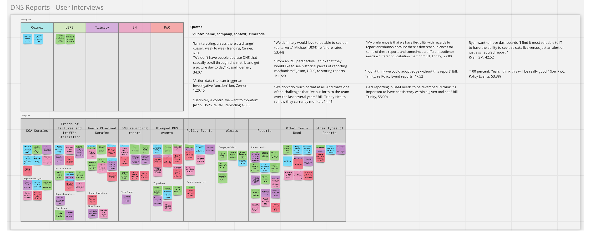
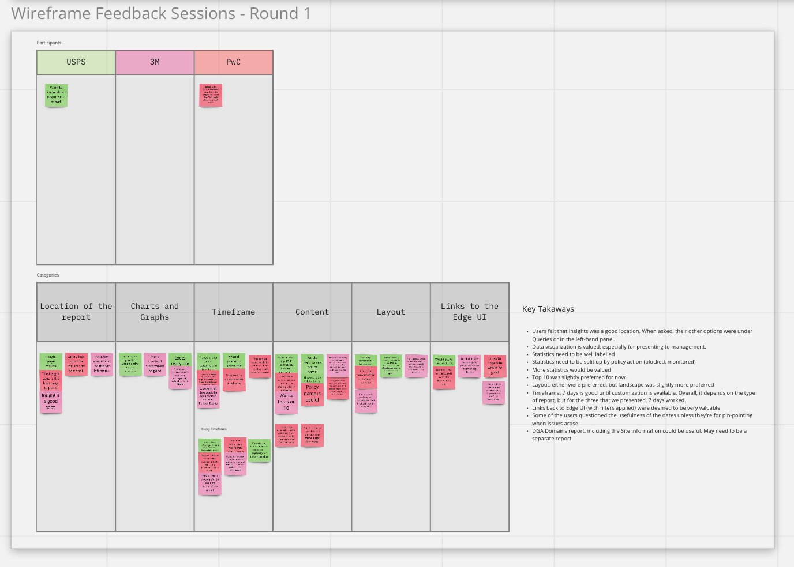

Understood the Environmental Space
As another designer and I were new to the company, we first started by understanding the problem space. We:
- Talked to a developer to determine what is feasible
- Explored current functionalities of Edge
During my coop at BlueCat Networks, I got the opportunity to partake in a research project regarding DNS Reports. The purpose of this research was to determine the value proposition of adding reports to BlueCat's Edge product and to determine the content and format of the report.
This project initially started as out as an easy-to-produce report that could be an addition to the Edge product. The Project Management team decided to conduct some customer validation to ensure this feature is needed by customers.
12 months - on and off
As another designer and I were new to the company, we first started by understanding the problem space. We:
With our design team and the Edge Product Managers, we conducted an exploratory session with 5 customers. We asked questions such as:
In Miro, we grouped topics together to find similarities and made a list of quotes and key takeaways. With this info, we created a presentation and presented the findings to executives.
MiroBoard:
We found that customers did feel these reports were useful. We also found that customizability and notifications were also really important for them. We ask if this could be included however, it was not possible with the resources we currently had allocated. This was decided that it would become a phrase two.
From the results of the exploratory session, wireframes were made by my teammate. We took the wireframes and conducted wireframe validation from 3 customers.
During the session we asked questions about:
Similar to the last feedback session, we documented and analyzed the findings.
MiroBoard:
The wireframes were then transformed into high fidelity mocks by my teammate and a feature review with developers was conductioned to begin the implementation. During the feature review, the design was handed off to the developers.
As the feature was being built, a demo was conducted to show the company what they had so far. During the demo, we found differences between what we had designed and what developers had produced. As a result, meetings were held to discuss the difference and also understand why the changes were made. We made changes to our design based on the meetings. We also held an additional call with internal Solution Architects to verify that the changes would still meet the needs of the customers.